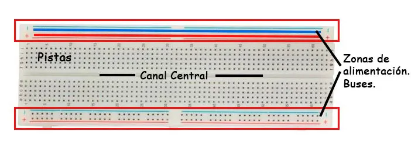
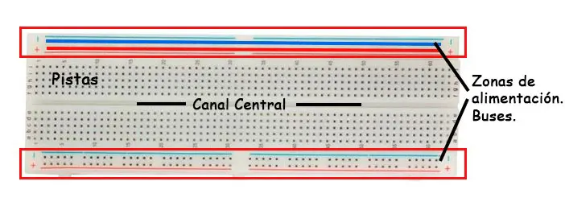

ARDUINO UNO
Es una plataforma de creación de electrónica de código abierto, basada en hardware y software libre. Es una placa basada en un microcontrolador ATMEL (circuitos integrados que graban instrucciones).
Las instrucciones se escriben con el lenguaje de programación de Arduino IDE (el entorno de desarrollo).
 

PROTOBOARD
Es una placa de pruebas, es un tablero compuesto por orificios que se encuentran conectados interna y eléctricamente entre sí.
Se divide en 3 zonas: buses, líneas rojas para cableado positivo, y líneas azules para GND, pistas que son los orificios restantes, se indican con filas enumeradas y columnas con letras, canal central que separan las zonas de conexión superior e inferiores
PULSADOR
Un pulsador es un interruptor temporal, que bloquea el paso de la corriente eléctrica de forma momentánea. Tiene dos valores: o está pulsado, o no lo está.
Se trata de un mecanismo simple constituido por un par de contactos eléctricos que se unen o separan por medios mecánicos.
MODULO DISPLAY LCD
Un módulo display LCD, es una pantalla de cristal líquido, que posee una fuente de luz y la reflecta sobre la superficie, mostrando imagen por medio de píxeles.
Los cristales líquidos están intercalados entre dos capas de vidrio, una de las cuales tiene una matriz de transistores para suministrar el voltaje. Cuando se aplica voltaje a un transistor en particular, los cristales líquidos cambian de orientación, inclinando la luz de una manera específica.
SENSOR DE ULTRASONIDO
El sensor de ultrasonido funciona como un dispositivo de entrada-salida mediante 2 transductores, es decir, emite un sonido ultrasónico, y espera que se produzca un rebote en un objeto presente, para utilizar su segundo transductor y captar el eco.
Permite calcular la distancia, ya que es proporcional al tiempo en que tarda en llegar.